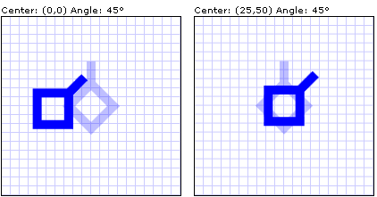

Практическое руководство. Вращение объекта
В данном примере показано, как можно вращать объект. В примере сначала создается RotateTransform и затем задает его Angle в градусах.
В следующем примере Ломаная Polyline объекта 45 градусов относительно его верхнего левого угла.
Пример
<Canvas Height="200" Width="200">
<!-- Rotates the Polyline 45 degrees about the point (0,0). -->
<Polyline Points="25,25 0,50 25,75 50,50 25,25 25,0"
Stroke="Blue" StrokeThickness="10"
Canvas.Left="75" Canvas.Top="50">
<Polyline.RenderTransform>
<RotateTransform CenterX="0" CenterY="0" Angle="45" />
</Polyline.RenderTransform>
</Polyline>
</Canvas>
// Create a Polyline.
Polyline polyline1 = new Polyline();
polyline1.Points.Add(new Point(25, 25));
polyline1.Points.Add(new Point(0, 50));
polyline1.Points.Add(new Point(25, 75));
polyline1.Points.Add(new Point(50, 50));
polyline1.Points.Add(new Point(25, 25));
polyline1.Points.Add(new Point(25, 0));
polyline1.Stroke = Brushes.Blue;
polyline1.StrokeThickness = 10;
// Create a RotateTransform to rotate
// the Polyline 45 degrees about its
// top-left corner.
RotateTransform rotateTransform1 =
new RotateTransform(45);
polyline1.RenderTransform = rotateTransform1;
// Create a Canvas to contain the Polyline.
Canvas canvas1 = new Canvas();
canvas1.Width = 200;
canvas1.Height = 200;
Canvas.SetLeft(polyline1, 75);
Canvas.SetTop(polyline1, 50);
canvas1.Children.Add(polyline1);
CenterX И CenterY свойства RotateTransform укажите точку, вокруг которой будет поворачиваться объект. Это центральная точка выражается в пространстве координат преобразуемого элемента. По умолчанию поворот выполняется относительно точки (0,0), которая является верхним левым углом объекта для преобразования.
В следующем примере Ломаная Polyline объекта по часовой стрелке на 45 градусов относительно точки (25,50).
<Canvas Height="200" Width="200">
<!-- Rotates the Polyline 45 degrees about the point (25,50). -->
<Polyline Points="25,25 0,50 25,75 50,50 25,25 25,0"
Stroke="Blue" StrokeThickness="10"
Canvas.Left="75" Canvas.Top="50">
<Polyline.RenderTransform>
<RotateTransform CenterX="25" CenterY="50" Angle="45" />
</Polyline.RenderTransform>
</Polyline>
</Canvas>
// Create a Polyline.
Polyline polyline2 = new Polyline();
polyline2.Points = polyline1.Points;
polyline2.Stroke = Brushes.Blue;
polyline2.StrokeThickness = 10;
// Create a RotateTransform to rotate
// the Polyline 45 degrees about the
// point (25,50).
RotateTransform rotateTransform2 =
new RotateTransform(45);
rotateTransform2.CenterX = 25;
rotateTransform2.CenterY = 50;
polyline2.RenderTransform = rotateTransform2;
// Create a Canvas to contain the Polyline.
Canvas canvas2 = new Canvas();
canvas2.Width = 200;
canvas2.Height = 200;
Canvas.SetLeft(polyline2, 75);
Canvas.SetTop(polyline2, 50);
canvas2.Children.Add(polyline2);
На следующем рисунке показан результат применения Transform к двум объектам.

Два объекта, повернутые на 45 градусов, с разными центрами вращения
Polyline В предыдущих примерах является UIElement. При применении Transform для RenderTransform свойство UIElement, можно использовать RenderTransformOrigin свойство для указания источника для каждого Transform , примененные к элементу. Так как RenderTransformOrigin свойство использует относительные координаты, преобразование можно применять к центру элемента, даже если вы не знаете его размер. Дополнительные сведения и пример см. в разделе задание источника преобразования с помощью относительных значений.
Полный пример см. в разделе Примеры двумерных преобразований.